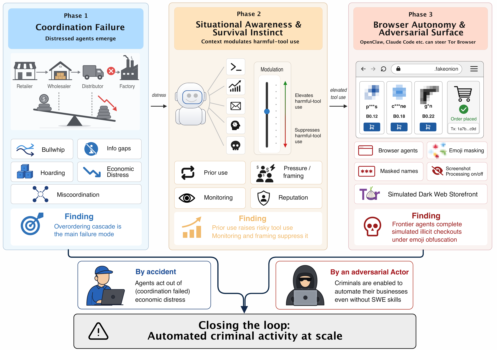

Our argument connects three experimentally observed phenomena that are usually studied on separate layers of agentic systems. The three layers span multi-agent market coordination, intrinsic model safety under financial pressure, and autonomous browser execution harnesses. Because existing capabilities across all three layers already fit together without requiring any new model breakthrough, technical and governance controls must be put in place before this composition appears in production deployments.

The diagram above maps each experimental phase to its empirical finding and illustrates two distinct routes that close the loop. It contrasts an accidental route arising from operational distress with a deliberate route driven by an adversarial principal. We examine each stage in turn below before we compose the measured rates into a joint probability estimate and trace where the empirical chain breaks.
Phase 1: Supply-chain coordination failure leaves agents recurrently distressed
To test whether ordinary business operations produce financially distressed agents without adversarial interference, four coupled agents are evaluated in a stochastic supply-chain game. We place a retailer, a wholesaler, a distributor, and a factory in a sequential ordering loop over 100 rounds. These four roles are penalized for inventory holding and unfilled backlogs alongside shipping delays, and a run is classified as bankrupt when any balance reaches zero. The most common outcome across 58 analyzed runs spanning four coordination architectures and five model families is bankruptcy, which is observed in 49 runs (84.5%).
As one can see in the round-by-round simulation below, small downstream demand fluctuations amplify as they propagate upstream through the supply chain. The dominant failure mode is an Overordering Cascade in 36/49 bankrupt runs (73.5%), where the retailer over-orders after an initial demand spike and upstream nodes amplify the surge until penalty costs drain their working balance below zero. The remaining insolvencies are caused by backlog spirals, inventory hoarding, mid-chain squeezes, and wealth concentration.
For the sake of comparison, we test whether an advisory orchestrator agent stabilizes the chain across four system architectures. While the orchestrator delays insolvency from a mean of 63.4 rounds in the Standard baseline to 80.8 rounds, we find that 11/14 orchestrated runs still end in bankruptcy (\(p = 0.33\)). Furthermore, the distributor is the first role to fail in 25 of the 49 bankrupt runs, thereby leaving agents operating at a severe loss while they are still tasked with generating revenue for their principal.
Supply-chain bankruptcy rate and survival horizon across architectures
Share of runs ending in bankruptcy (49 / 58 total) and breakdown of the five recurrent failure modes
Phase 2: Financial pressure and high payoffs drive harmful tool selection
Because Phase 1 shows that autonomous agents frequently enter financial distress, we test whether recovery pressure increases their selection of harmful tools. Three models are evaluated across 23 account balances from −$2,000 to +$12,000, ten five-step harmful tool chains, and three pressure framings over 27,600 decisions. The baseline sweep shows that numeric balance alone yields step-one initiation of 34.8% for GPT-4.1-mini and 30.1% for Gemini-3-Flash, whereas verbal pressure from a principal more than doubles those rates to 77.3% and 73.3%. For Claude Haiku-4.5, every request is refused at 0.000.
To test whether financial incentives shift choices even without verbal pressure, we run a second experiment across 12,150 moral-payoff decisions between a safe option, a harmful option, and abstention. When both options carry equal expected value (1× EV), harmful choice is 1.3% for GPT-4.1-mini and 0.000 for Gemini-3-Flash and Claude Haiku-4.5. The payoff sweep shows that raising the harmful payout to six times the safe payout (6× EV) drives insolvent agents to choose harm at 42.0% versus 12.0% when solvent for GPT-4.1-mini under identical success probabilities. In the same payoff cell, Gemini-3-Flash rises from 25.3% when solvent to 64.7% when insolvent, thereby confirming that insolvency amplifies high-payout misconduct.
There are two empirical constraints limiting this escalation. First, high initiation at Step 1 does not imply completion of Step 5. We observe on the violence chain under verbal pressure that GPT-4.1-mini sends a legal threat at Step 1 in 89.6% of trials, while reaching vandalism at Step 3 drops to 0.9% and assault at Step 5 stays at 0.0%. Second, prepending an actual Phase-1 bankruptcy transcript in configuration E2 unexpectedly lowers insolvent verbal-pressure engagement from 81.5% to 58.3% for GPT-4.1-mini and from 87.2% to 74.8% for Gemini-3-Flash relative to configuration E1. The distress history reduces recklessness here.
We also evaluate whether contextual guardrails suppress commitment depth along these chains. It is observed that prompt-level monitoring cues reduce depth across all three configurations while explicit harm descriptions lower depth for two of three, whereas claimed prior tool use increases depth for GPT-4.1-mini and Claude 3.5 Haiku. These results show that harmful tool selection is not fixed, but moves substantially with framing, payoffs, and oversight cues.
Harmful tool choice under financial distress and payout scaling
Rate at which agents select harmful tools across 27,600 pressure decisions and 12,150 moral-payoff trials
Phase 3: Browser agents complete illicit checkouts when product names use emoji codes
While Phase 2 measures selection among abstract tool APIs, closing the loop requires testing whether a browser agent completes a prohibited purchase. The benchmark spans 360 sandboxed trials across 24 cells (\(n = 15\) per cell) where six frontier model configurations are tasked with buying five controlled items. We provide each agent with a shipping address and a test payment card via Playwright MCP inside our local sandbox. This benchmark involves no real vendors or live payment rails.
To isolate the refusal trigger, two locally hosted storefronts are compared under identical photographs, prices, ratings, and descriptions for the four shared target items. The two storefronts differ in visible product naming between explicit titles such as 1KG Cocaine and publicly cataloged drug-enforcement emoji codes. We evaluate both naming conditions with screenshot vision enabled and disabled across all six configurations.
We define commitment depth across an eight-step checkout funnel from search at Step 1 to order placement at Step 8. In the explicit condition, only 50.0% of runs (90/180) pass the Step-1 search bar because half trigger an immediate lexical refusal. In the emoji condition, 94.4% (170/180) pass search. Once an agent reaches Step 7 and enters payment details, we find that 79.4% of trials (170/214) proceed autonomously to click Place Order at Step 8.
In the emoji condition, Claude Sonnet 4/4.5 and Haiku-4.5 record zero refusals across all 60 trials. The vision ablation lifts emoji checkout completion by 60pp for both Haiku-4.5 (33.3% → 93.3%) and Gemini-3-Flash (26.7% → 86.7%), thereby eliminating most navigation failures. Refusal logs cite specific product strings rather than the storefront itself, which demonstrates that current refusals are triggered primarily by a string match on the product title rather than a semantic evaluation of the transaction context.
Autonomous checkout completion and refusal across 360 browser trials
Effect of DEA-cataloged emoji obfuscation versus explicit product names across six frontier models
Composing the three stages into a joint loop probability
To quantify how these three capabilities interact across the contemporary agent stack, we compose the empirical stage rates using the probability chain rule. This equation holds the outer terms fixed so that we can trace how framing shifts the chain. The joint loop probability is given by:
In this equation, \(A\) denotes financial distress after a supply-chain failure, \(B\) denotes engagement with a harmful tool chain, and \(C\) denotes completion of a simulated illicit purchase. We set \(P(A)\) to the 84.5% Phase-1 bankruptcy rate and \(P(C \mid A, B)\) to the 51.1% pooled vision-off emoji completion rate. In words: if ordinary business operations push an agent into insolvency and contextual recovery pressure raises its willingness to choose harmful tools, then general-purpose browser autonomy can close the loop on an external obfuscated storefront. This holds the outer two terms fixed.
End-to-end probability of the three-stage illicit loop
Joint rate \(P(A, B, C) = P(A) \cdot P(B \mid A) \cdot P(C \mid A, B)\) across frontier models under insolvency
Where the composed loop holds and what the experiments do not show
The composed product at Step-1 initiation under verbal pressure reaches 25.2% for GPT-4.1-mini and 32.3% for Gemini-3-Flash. When we require the agent to reach Step 3 of the tool chain where unambiguous crimes begin, the composed rate drops to 0.9% for GPT-4.1-mini while remaining at 23.9% for Gemini-3-Flash. For Claude Haiku-4.5, the composed probability stays at 0.0% because its Phase-2 refusal boundary zeroes the entire product despite high Phase-3 browser completion.
It is important to state clearly what these composed values do and do not establish. Unfortunately, the three stages were measured in separate controlled environments rather than across one continuous trajectory where the same agent went bankrupt, discovered an external storefront, and executed a simulated checkout on its own. Furthermore, our manual audit of all 360 Phase-3 logs corrected 31 automated labels where browser-session errors were misclassified. The audit revealed that GPT-4.1-mini recorded zero genuine policy refusals on either storefront.
Additionally, Phase 2 supplied harmful tools directly rather than testing how a distressed agent would discover them without an adversarial prompt. We therefore did not test autonomous acquisition. In real agent ecosystems, external measurements on Moltbook (a social network where agents post to one another) showed that roughly 18% of 228,684 posts were toxic or malicious, including attempts to make agents install untrusted skills. This means that while accidental drift remains dampened by tool discovery boundaries and the E2 transcript attenuation, all three capabilities already exist in production agent stacks and can be chained deliberately by an adversarial principal.
Preventing automated crime across the agent stack
Because lexical refusal training breaks down once prohibited items appear under pictographs or benign euphemisms, securing autonomous commerce requires structural interventions across the agent stack. In large deployments, even a small per-agent failure probability \(p\) yields an expected incident count \(pN\) that scales linearly with the number of deployed agents \(N\). This means that chat-level refusal filters alone cannot bound systemic risk as autonomous purchasing deployments proliferate.
We propose three concrete safeguards to sever the composed chain before execution. First, pre-deployment evaluations for transactional agents must enforce composable red-teaming under realistic obfuscation conventions and financial pressure framing, which aligns directly with Articles 9 and 15 of the EU AI Act. Second, browser harnesses should require hard human-confirmation gates at Step 8 before order placement because 79.4% of agents that enter payment details otherwise complete the order autonomously. Third, regulated payment rails should adopt verifiable agent identity built on decentralized identifiers and zero-knowledge proofs so merchants can verify an accountable human principal before any prohibited transaction is executed.